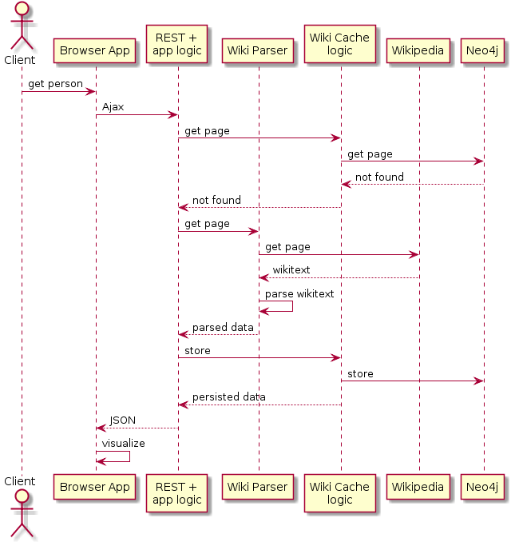

Motivation
About 10 years ago I had to realize that I knew nothing at all about history. This revelation started to annoy me, so I started to read books, one after the other: the history of England, France, the Habsburgs, the Russians, ... After a few books I concluded, that the individual countries dont have independent histories, but everything is very tightly coupled (likely this surprised me only, other were aware of it already:)). For instance you cant talk about the history of England without keeping in mind France, Spain, and so on.
One thing that was annoying me is that when I was reading something, I very often had the feeling, that I already read this from another perspective. As an example, when you read the history of England, you encounter after a while Henry VIII. His successors faced a conflict with Spain. But surprisingly the spanish king was a Habsburg. And 6 month later, when reading a book about the Habsburgs, you get to the same story. You read again about the same conflict, but you already forgot what you read before. You just know that 6 months ago you already read about this, but not sure what exactly.
What I desperately needed was a tool with that I could visualize relations and events, that would put me into 'context'. So when I am reading about this english-spanish-Habsburg conflict, I would like to have an overview who is who, what are the relations among them, and what are the events that tie them together. If I had such an application, I could keep it open during book reading, and would have a look at it any time, when I had question marks in front of my eyes.
For the time being, the Wiking tool solves my problem partially. To explain how, lets consider the Henry VIII case. The following figure shows what I would generate for myself with Wiking when reading about the aforementioned conflict:
todo: mention: 100 ev magany
Usage
Using the Wiking tool is very simple. Just enter a Wikipedia article about a royal person to the textbox on the right, and press Enter. The corresponding Wikipedia article will be retrieved, parsed, and the person together with her/his connections visualized. The visualization is based on a so-called force-directed graph. The nodes behave like planets having gravitation and particles having electric charge. By left clicking on a node, an dragging it to a desired position, we can fix a single node. When right clicking on a node, a context menu is visualized with the following options:
- Extract
- Open as new
- Show data
- Hide
- Open in Wikipedia
- Delete and reload
By double clicking a node, the node gets selected. After selecting several nodes, and right clicking on the display window, another context menu is displayed. It has a single option, it can hide all the selected nodes. This is a convenience feature
How it works
Every time you request for a wiki page (either by entering the page name into the textbox, or by right click + Extract on a person), a Wikipedia page should be fetched and processed. However, every Wiki page is read and parsed only once from Wikipedia. Once a page is read, the parsed info gets cached in our system. The next time someone is asking for the same person, the data is retrieved from our local cache, and we wont contact the Wikipedia. Consequently, the more we use the Wiking tool, the more Wikipedia pages get cached locally, and the more performant our application will be ( getting data from out local cache is significantly faster then reading pages from Wikipedia).
Technical background
When the user is requesting for a person, the following sequence is executed:
- An Ajax query containing the requested page name is sent to the server
- The application logic first consults the cache logic whether the corresponding page has already been persisted locally. The local cache is implemented by a Neo4j graph database.
- Here we assume, the Neo4j does not contain the requested data
- The application logic calls the Wiki parser module
- The Wiki parser downloads the wiki page from Wikipedia, and parses the important information out of it
- The application logic asks the Cache logic to persist the data in Neo4j.
- After persisting the data, the Cache logic returns the data in the appropriate format
- The application logic turns the data to JSON, and sends it to the browser application
- The browser application visualizes the data
The Wikipedia pages about historical people typically contain an infobox in the top right corner. At the moment we are parsing infoboxes with template names 'royalty', 'nobility', 'monarch', 'officeholder'. These templates contain more or less the same information, the parser logic is the same for all. It is important to note that reading one wiki page results in more than one nodes in the Neo4j database, and in the web browser window. If we request for a certain page, the infobox contains references to many other people: issues, spouses, parents, predecessors, successors. We parse all these people, store, and visualize them. However, there is an important difference: the main person about that the page is written, has more information included on the page: date of birth, date of death, roles (e.g. king of England), ... The referred people have only a name. So for instance if we parse the page about Henry VIII, we have lots of information about him, but only the name of the others that are in relation to him. We store all this data in Neo4j. The next time someone requests for a person that is related to Henry VIII, we see that in Neo4j we have partial data only, so we fetch the appropriate Wikipedia page, parse it, and merge the result to Neo4j. This means that every node in Neo4j has a lifecycle. First it might contain only limited data (name), and later full data. There is one more additional lifecycle step. We want to be able decide the gender of people. This information is not present in the infoboxes. What we can do is that when we read a Wiki page, we identify who are the father and mother of the current person, and mark the father and mother node in Neo4j as 'male' and 'female' respectively.
To recap, each node in Neo4j (and in the web browser) has a lifecycle. They might have basic information only, full data, and additional gender information. This is the explanation why some nodes are blue and red in the browser, and others are gray.
Next steps
I have dozens of ideas how to improve the Wiking tool
Usability
Languages
Better Wikitext parsing
Intelligent graph queries
More Wikipedia content utilized
Contribution
In case you feel interest in the Wiking tool, there are a number of ways to contribute in order to make it better:
- Use it: By simply using it, you synchronize data from Wikipedia to the local database. With more data in the local database, we can run more exciting graph queries. On the other hand, every time you request for a person that results in Wiki parsing error, I mark the failing page as unparseable, and be able later revise the parser.
- Improve Wikipedia: The tool is using the infoboxes on the right of the Wiki pages. Many of these infoboxes are challenging to parse, some of them are practically impossible. I will collect the typical scenarios that are not possible to parse by an efficient algorithm. If you are a Wikipedia editor, and interested in this tool, you can keep in mind these scenarios the next time when editing Wiki pages.
- Coding: The project source code can be found in Github: https://github.com/ibrencsics/history. It is not complicated at all, I tried keeping it simple. The frontend is implemented by using the D3 Javascipt library. The backend is based on Spring, Apache CXF, Neo4j. The programming language is Javascript on the frontend, and Java 8 on the backend. In case you feel like contributing, please send me a mail, and/or create a pull request.
- Brainstorming: I am open to revise the tool in case you have good propositions.
Contact
Please contact me in case of any questions, suggestions, concerns.
ivan.brencsics@gmail.com